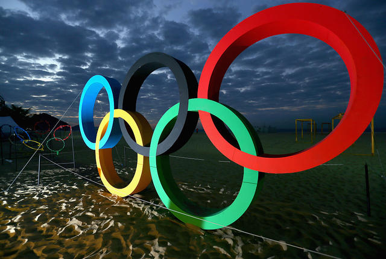
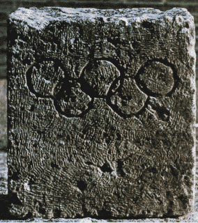
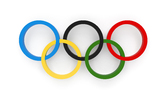
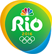

What is Olympic Games?
The Olympic Games begun at Olympia in Greece in 776 BC. The Greek calendar was based on the Olympiad, the four-year period between games. The games were staged in the wooded valley of Olympia
in Elis. Here the Greeks erected statues and built temples in a grove dedicated to Zeus, supreme among the gods. The greatest shrine was an ivory and gold statue of Zeus. Created by the sculptor Phidias,
it was considered one of the Seven Wonders of the World. Scholars have speculated that the games in 776 BC were not the first games, but rather the first games held after they were organized into festivals
held every four years as a result of a peace agreement between the city-states of Elis and Pisa. The Eleans traced the founding of the Olympic games to their King Iphitos, who was told by the Delphi Oracle
to plant the olive tree from which the victors' wreaths were made.
According to Hippias of Elis, who compiled a list of Olympic victors c.400 BC, at first the only Olympic event was a 200-yard dash, called a stadium. This was the only event until 724 BC, when a two-stadia
race was added. Two years later the 24-stadia event began, and in 708 the pentathlon was added and wrestling became part of the games. This pentathlon, a five-event match consisted of running, wrestling,
leaping, throwing the discus, and hurling the javelin. In time boxing, a chariot race, and other events were included.
The victors of these early games were crowned with wreaths from a sacred olive tree that grew behind the temple of Zeus. According to tradition this tree was planted by Hercules (Heracles), founder of the games.
The winners marched around the grove to the accompaniment of a flute while admirers chanted songs written by a prominent poet.
The Olympic Games were held without interruptions in ancient Greece. The games were even held in 480 BC during the Persian Wars, and coincided with the Battle of Thermopylae. Although the Olympic games were never
suspended, the games of 364 BC were not considered Olympic since the Arkadians had captured the sanctuary and reorganized the games.
After the Battle of Chaironeia in 338 BC, Philip of Makedon and his son Alexander gained control over the Greek city-states. They erected the Philippeion (a family memorial) in the sanctuary, and held political meetings
at Olympia during each Olympiad. In 146 BC, the Romans gained control of Greece and, therefore, of the Olympic games. In 85 BC, the Roman general Sulla plundered the sanctuary to finance his campaign against Mithridates.
Sulla also moved the 175th Olympiad (80 BC) to Rome.
The games were held every four years from 776 BC to 393 AD, when they were abolished by the Christian Byzantine Emperor Theodosius I. The ancient Olympic Games lasted for 1170 years.
The successful campaign to revive the Olympics was started in France by Baron Pierre de Coubertin late in the 19th century. The first of the modern Summer Games opened on Sunday, March 24, 1896, in Athens, Greece.
The first race was won by an American college student named James Connolly.
What Do the Olympic Rings Mean?



5 rings represents 5 continents , these are Asia,Africa,America(south & north),Australia,Europe.The flag features the emblem of the olympic games- five inter locking rings (blue,yelloww,black,
green & red) on a white field. these five rings represent the five parts of the world which now are own over to Olympism and willing to accept healthy compitition.Moreover ,these six coloures
thus combined reproduce those of all the nations without exception.The blue and yellow of Sweden , the blue and white of Argentina,the French,British,German,American,Belgian,Italian,Hungerian
tri coloures,the yelow and red of Spain lie next to the new Brazilian & Australlian flags & the old Japan and the young China.This is really an international emblem.
The Internationalization of the Olympic Games
From the beginning, the games at Olympia served as a bond between Greeks and strengthened the Greek sense of national unity. During the Hellenistic period, Greeks who came to live
in foreign surroundings such as Syria, Asia, and Egypt, strove to hold on to their culture. One of the ways to achieve this was to build athletic facilities and continue their athletic traditions.
They organized competitions, and sent competitors from their towns to compete in the Panhellenic games.
In the 2nd century A.D., Roman citizenship was extended to everyone within the Roman empire. From then on, the participation of many competitors from outside of Greece in the Olympic games, gave
them to a degree, international nature.
When the Greek government reinstated the games in 1896, this international character of the competitions was preserved by Baron de Coubertin. Now, 16 centuries later, the Olympic games attract competitors
from countries all over the world.
International Olympic Committee
The development and governance of the modern games are vested in the International Olympic Committee (IOC), founded in Paris in 1894. Its headquarters are in Lausanne, Switzerland.
The original committee had 14 members; today there are about 70. These individuals are considered ambassadors from the committee to their national sports organizations and are dedicated to
promoting amateur athletics. Normally there is only one member from each country. Presidents of the IOC are elected for an eight-year term and eligible for succeeding four-year terms.
Each country sending teams to the games must have its own National Olympic Committee. By 1988 there were 167 such committees. One responsibility of a national committee is arranging for its team's
participation in the games, providing equipment, and getting the team to the game site and into specially arranged housing.
Host cities of Olympic Games
Since their resumption in their modern form in 1896 in Athens, the Olympic Games took place in the following cities:
| Year |
Cities |
| 1896 |
Athens |
| 1900 |
Paris |
| 1904 |
Saint Louis |
| 1908 |
London |
| 1912 |
Stockholm |
| 1916 |
Cancelled(was due in Berlin) |
| 1920 |
Antwerp(Belgium) |
| 1924 |
Paris |
| 1928 |
Amsterdam |
| 1932 |
Los Angeles |
| 1936 |
Berlin |
| 1940 |
Cancelled(was due in Tokyo) |
| 1944 |
Cancelled(was due in Helsinki) |
| 1948 |
London |
| 1952 |
Helsinki |
| Year |
Cities |
| 1956 |
Melbourne |
| 1960 |
Rome |
| 1964 |
Tokyo |
| 1968 |
Mexico City |
| 1972 |
Munich |
| 1976 |
Montreal |
| 1980 |
Moscow |
| 1984 |
Los Angeles |
| 1988 |
Seoul |
| 1992 |
Barcelona |
| 1996 |
Atlanta |
| 2000 |
Sydney |
| 2004 |
Athens |
| 2008 |
Beiging |
| 2012 |
London |
Rio Olympic 2016

Back